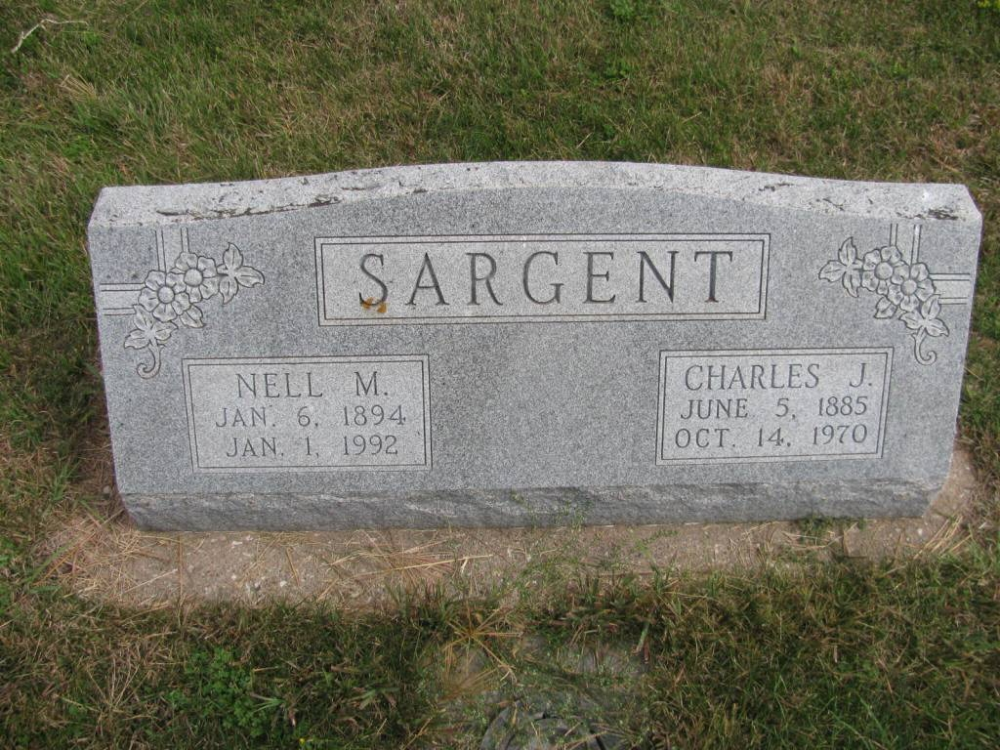

Charles Jacob Sargent 1885 - 1970
[ Home ] | [ Calendar ] | [ Surnames Index ] | [ Census Index ] | [ Family History ]The child of Jacob Sargent and Alice Bellmore, Charles Sargent, the third cousin three-times-removed on the mother's side of Nigel Horne, was born in Hanna, LaPorte, Indiana, USA on Jun 5, 18851,2 and had 8 children with Nell M Thompson: Leroy Charles, Edith M, Evert Wayne, Irene F, Helen N, Betty Jane, Opal J and Sidney, along with 3 surviving children.
During his life, he was living in Polk, Nebraska, USA on Jan 1, 19204; and in Osceola, Nebraska on Apr 8, 19303 and on Apr 1, 19405 which is where he died on Oct 4, 19701. He was buried at Graceland Cemetery, Shelby, Nebraska after Oct 4, 1970.
Parents
- Jacob was born on Feb 18, 1856
- Alice Josephine was born on Jan 24, 1862
Children
- Leroy Charles was born on Apr 4, 1912
- Edith M was born on Apr 12, 1913
- Evert Wayne was born in Feb 1915
- Helen N was born on Dec 6, 1920
- Betty Jane was born on Jul 24, 1923
Citations
- Social Security Death Index - Findmypast
- United States Billion Graves index - Findmypast
- US Census 1930 - Findmypast (was age 44 and the head of the household)
- US Census 1920 - Findmypast (was age 33 and the head of the household)
- US Census 1940 - Findmypast (was age 54 and the head of the household)
Media
Charles Sargent - Nell Thompson - headstone

1930 US Census Transcription - USC-1930-004951879-00085-039
US Census 1930 - USC/1930/004951879/00085/033
US Census 1920 - USC/1920/004966379/00029/060
Social Security Death Index - USBMD/SSDI/508079293
Family Tree

Generated by ged2site. Last updated on Jun 11, 2024